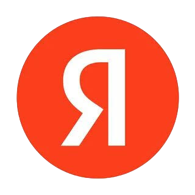

О себе:
Работал в крупнейших российских компаниях. Выступал тест-лидом функциональности команды: разрабатывал тестовую модель и повышал стабильность e2e-тестов. Внедрил кэширование тестовых пользователей, ускорившее прогоны в 6 раз, и организовал внедрение подхода в других командах.
Опыт работы:
Авито Работа - QA-инженер в кросс-функциональной продуктовой команде (удалённо)
- Выступал тест-лидом функциональности команды: разрабатывал тестовую модель, учитывая пирамиду тестирования.
- Участвовал в запуске нескольких масштабных АБ-экспериментов, отмечая проблемы, которые прямо влияли на бизнес-метрики.
- Стабилизировал e2e тесты, в частности, оплату в них (снизил flaky rate до ≈5%).
- Внедрил кэширование тестовых пользователей в e2e тестах, что ускорило прогоны в 6 раз. Это сократило время выхода продукта на рынок и сделало тесты менее зависимыми от проблем инфраструктуры. Популяризировал подход, организовав кросс-командное внедрение. Впоследствии проект вышел на уровень всей компании, адаптировавшись в разных вертикалях.
- Отметил проблемы метрик надежности, которыми пользовались все инженеры компании. Это сподвигло быстрее перейти на новые метрики и избавило мониторинг от ложноположительных показателей.
- Сконфигурировал канареечные релизы в 8 микросервисах, внедрив адаптивные пороги отката.
Стек: Postman, TypeScript, Go, Proxyman, Charles, DevTools, Atlassian
1

Яндекс Музыка - разработчик в продуктовой backend-команде (офис)- Увеличивал тестовое покрытие. Покрывал код модульными и сквозными автотестами.
- Разработал проект геотаргетинга лендинга Музыки с нуля — от проектирования до реализации, тестирования и внедрения. Теперь контент главной страницы сервиса зависит от города пользователя и настраивается через админку.
- Участвовал в переносе контент-админки (треки, альбомы, исполнители и т. д.) со старого стека на новый, улучшив пользовательский опыт контент-менеджеров.
- Проводил рефакторинг монолита.
Стек: Java Spring, MongoDB, JUnit, Mockito, Postman
Достижения:
- 3-е место в финале всероссийского конкурса "Моя профессия - ИТ"
- Нашёл баг в Bug Bounty от Telegram Wallet
Пройденные курсы:
2